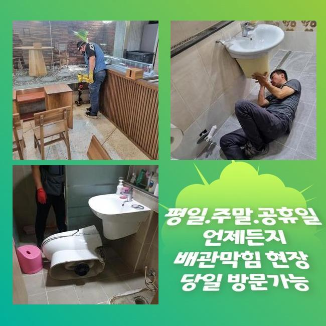
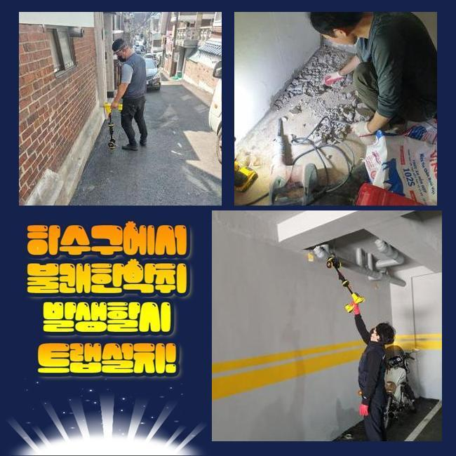
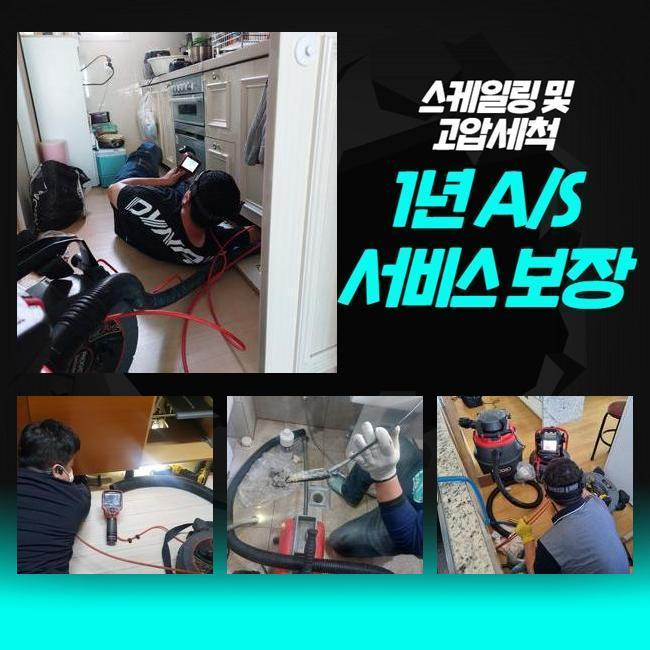
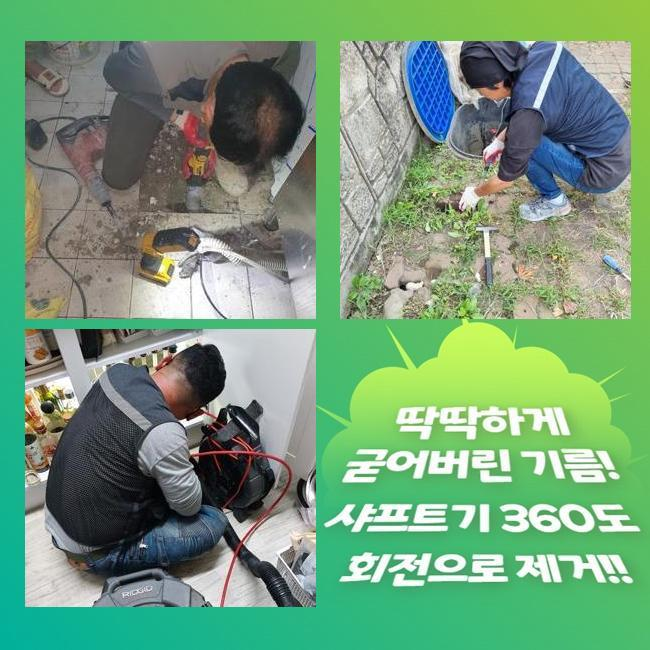
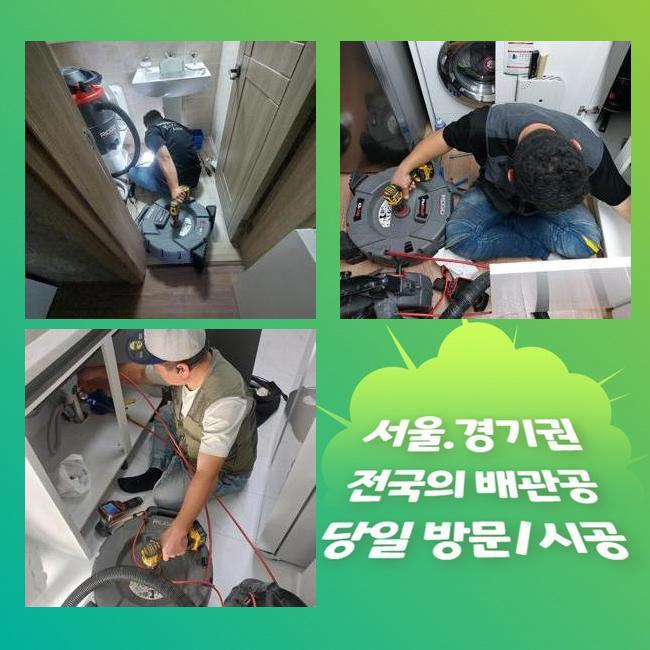
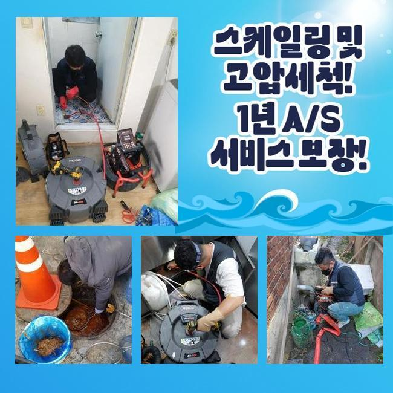
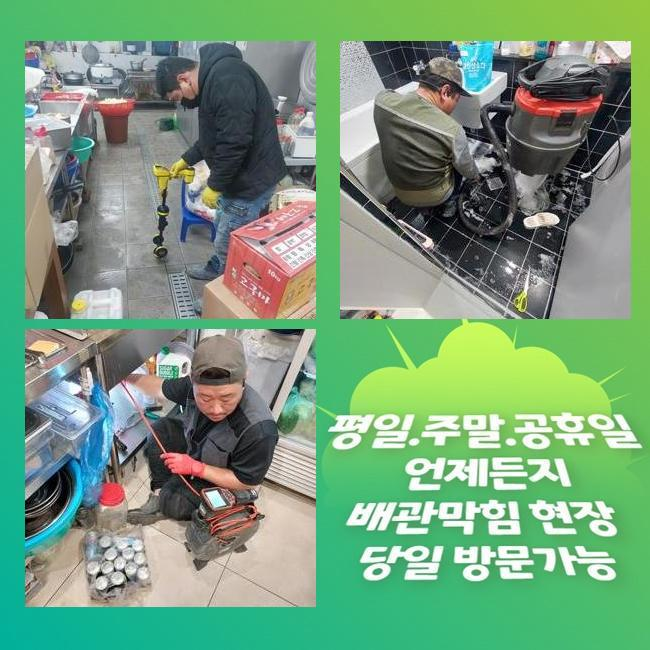

🏠 안양 달안동변기역류 볌계동 집수정청소 부속수리
안양 싱크대막힘 전문 시공 후기

📋 작업 개요
- 위치: 안양
- 서비스 유형: 싱크대막힘, 변기막힘, 하수구막힘, 배관막힘, 집수정막힘, 역류해결, 뚫는업체, 배관청소, 고압세척, 설비공사
- 작업 일시: 2025. 5. 23. 3:12
- 업체명: 하수구수사대 (010-5615-2118)
🔍 문제 상황
안양 달안동변기역류 볌계동 집수정청소 부속수리
가정 내 싱크대 고장이 일어나면 그로인한 고충은 말로다 표현할수 없겠죠
배수가 안되면 음식물을 만드는데도 방해요소가 될것이고 그릇을 씻기도 어려워질거에요
싱크대의 배수관에 정체가 일어나 갑갑한 정황을 연출한다면 어떤 방식으로 통수를 진행하는지 말씀드리도록 할게요
금번에 방문한 데는 10층 주택이었어요
급작스런 주방시설 고장그래서 전화를 주셨어요
의뢰인께선 이사를 온뒤에 배관에서 역류현상이 발발하는건 경험해보지 못했던 부분이라고 하셨는데요
며칠전까지는 각종 방안을 접목하여 배수관 고장에 대응책을 마련해보고자 하셨답니다
인터넷으로 구매가능한 액상 뚫어뻥제품을 써보기도 하였고 옷걸이로 침전물을 치우려 시도해본적도 있으시다는군요
그후 약간 물빠짐이 나타났으나 금방 막힘이 생기는 바람에 분명한 작업이 필수적이라 판단하셨다고 합니다
현장으로 이동해 전체적인 하수구 체증상황을 파악하고 차후 작업방식을 결단내리기로 했답니다
배수관이 막힌다면 고약한 냄새를 일으킬 가망이 크죠
이곳도 그런사태가 나타났을 거라는 생각으로 출발하였답니다
도착하니 예상대로 집안 전체에 고약한 내가 가득하였죠

🔎 원인 분석
💡 전문가 진단: 정밀 진단 장비를 사용하여 슬러지의 고착 여부를 판명하고 타격/세척 작업을 실시했습니다.
두달간 배관고장으로 고생하셨기에 빠르게 조치해야 했답니다
정황이 이렇게 될 지경까지 조치를 미루지말고 재빠르게 의뢰하셨다면 보다 수월히 막힘을 해소했을거라 생각하는데요
그렇긴 하지만 문제상황이 더 깊어지기전 수리를 받게되었기에 막대한 피해상황은 막아낼수가 있었네요
배수기능이 멈추면 침전물이 부패해버리는 상황이 발발하죠
그것으로 위생상태가 점차 심화되고 가정안의 삶이 어려운 상태까지 부닥칠수 있답니다
주방설비 하부를 열어서 주름배관을 탈거해 주었어요
배수문쪽의 오물을 미리 처치해야 추후작업으로 진입할수 있답니다
이것들을 정리하기 위해서 고압 흡입기기를 사용하기로 하였답니다
석션기계는 강한 힘으로 파이프에 잔류하는 침전물들을 민첩하게 소제시켜주죠
그렇기에 배수관 세척을 시행할땐 언제나 챙겨야 하는 기계입니다
반면 5분이 넘게 흡입을 진행하였음에도 막힘해결은커녕 역류까지 계속되었죠
석션기기로 처리가 힘든 연유는 퇴적물이 두텁게 누적돼있기 때문이겠죠
거기에 더해 관로벽에 석회성분과 같이 결합된 상황에서도 그런 모습들이 발발하게 된답니다
석션장비로 정비가 힘든 사유를 알아보려 내시경cctv를 적용하기로 했어요
보편적으로 관로는 마감재 아래에 있기 때문에 원인을 분명하게 점검하기 힘들죠

🔧 작업 과정
이때는 내시경이 연결된 기계를 투입하여 상황을 간파할수 있죠
관로의 초입 구간에는 별다른 이물이 없었는데 더욱 안쪽으로 돌입하니 검은색 물체가 목도되었죠
흙더미와는 형태가 상이했고 근접해보니 타일파편으로 판단되었죠
건설한지 2년된 아파트였으며 내부공사를 진행할때 조그마한 쓰레기들을 배수관으로 투입했다고 판단되었죠
점차 파이프에 적체되면서 길을 빽빽하게 하였다고 추정할수 있답니다
거기에 더해 퇴적물이 무게도 많이 나가서 흡입기기로는 세척하기 힘들었던 거랍니다
해당 지점처럼 준신축에서도 막힘을 직면할수 있어 주의가 필요하죠
조사를 끝마쳤으니 이제는 합당한 방책을 사용해서 세척을 시작해야 하겠죠
가급적 신속히 진행해야 더이상의 피해를 예방할수 있답니다
이물질이 무겁기 그래서 우선은 자잘하게 갈아내어야 청소가 가능해집니다
플렉스샤프트 기계라는 장비가 찌꺼기를 분쇄시키는데 필요한 기기입니다
해당하는 장비를 통해서 고착화된 파편을 최대한 자잘하게 되도록 스케일링을 진행하기로 했죠
배관 내측을 내시경기기로 검사하면서 파쇄공정을 해야합니다
예측보다 아래쪽으로 노폐물이 깔려있어서 보다 집중적으로 작업해야 했죠
플렉스샤프트 기계로 분쇄를 진행한뒤 배관카메라로 내부의 모습을 계속적으로 조사하였습니다
해당수순으로 정비와 관측을 같이해 나가야 관로손상이 안생기고 적절하게 뚫음이 진행된답니다
금번에 시행한 통수공정으로 동일한 사태가 일어나지 않게 철저하게 정리해 나갔답니다
시간이 지난뒤 배관카메라로 배관이 깔끔해진 상황을 목견하였죠
시공전 가득찼던 침전물들은 없어졌고 정결해진 하수관을 포착할수 있었네요
그러고 나서 물빠짐을 검증하기 위한 검사를 실시했죠
하수구 카메라로 구석구석 조사를 하였어도 막힘이 유지되는 상황도 존재합니다
이것은 별개의 고장이 잔존한다는 증거이므로 별도의 검사가 이루어져야 할 것입니다
이곳은 고인물이 지체없이 빠지는 걸 목견할수 있었답니다


✅ 작업 완료
시공전 분해했던 주름배관을 연결시킨뒤 주변의 이물들을 치우고 끝마쳤습니다
지금까지 막힘과 역류의 주범인 이물들을 소멸시킨뒤 이후 세척으로 악취까지 제거하는 업무를 알려드렸는데요
싱크대 공간은 식자재를 조리하는 데라서 청결한 상태가 중요하게 간주되죠
배관막힘이 생기면 잠정적인 대책보단 실체적인 연유를 알아내 처리해야 냄새 안나는 말끔한 배관을 보존할수 있죠
역류나 막힘이 일어났을 시엔 지체하지말고 저희와 같은 전문팀에게 연락해 보세요
답답한 상황을 완벽하게 처치하겠습니다




⚠️ 주방 싱크대 배관 막힘 예방 수칙
- ✅ 기름기가 묻은 식기나 프라이팬은 설거지 전 키친타올로 반드시 기름때를 닦아내세요.
- ✅ 주기적으로 싱크대 개수대에 뜨거운 물을 가득 받아 한 번에 내려 배관 내부 기름을 씻어내세요.
- ✅ 배수구 거름망을 미세한 필터로 사용하시고 음식물 찌꺼기가 틈으로 새어 들지 않게 관리하세요.
- ✅ 베이킹소다와 식초를 뜨거운 물과 함께 일주일에 한 번씩 부어주면 배관 살균과 막힘 예방에 좋습니다.
💡 핵심 정리
- 확실한 장비 작업(내시경 점검 및 샤프트 스케일링)으로 원인을 뿌리 뽑습니다.
- 작업 후 1년 이내에 동일한 부위 재발 시 100% 무상 A/S 서비스를 보장합니다.
- 서울 · 경기 · 인천 전 지역에 24시간 언제든 긴급 출동할 수 있도록 항시 대기 중입니다.
❓ 자주 묻는 질문 (FAQ)
🚨 안양 싱크대막힘 문제로 고민이신가요?
정확한 원인 진단과 확실한 시공으로 재발 없는 해결을 약속드립니다.
24시간 긴급 출동 | 서울 · 경기 · 인천 전지역 | 1년 내 재발 시 무상 A/S